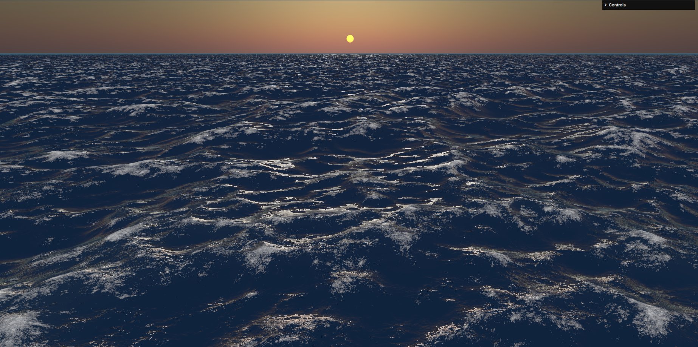

The target
Deep choppy open sea, whitecaps everywhere, a single sun-glint streak. We replicate its wave geometry, foam, and glint behavior — but drive color from civsim's lighting preset (warm Aegean by day; dusk-capable). No dusk mood baked into the albedo.
This image is the compare-screenshots target at
assets/reference-ifft-ocean-dusk.png.
Spike (decides technique)
Look (one variable, on the lab open-sea plane)
Integration (drop into the real product)
Cleanup
S1 — Technique bake-off spike
variable: Gerstner vs IFFT — picks the winner + freezes the WaterFieldSource seam + the clock
/renderer/water-bakeoff?tech=…&compare=1 + perf table + decision artifact
S2 — Wave silhouette / displacement
variable: wave geometry (neutral grey)
/renderer/water-bakeoff?tech=<winner> — mid-frame swell band
S3 — Whitecap foam coverage
variable: foam coverage + threshold
open-water whitecap field — coverage vs reference
S4 — Sun-glint streak
variable: glint shape + sun-tracking
the sun-track band
S5 — Water albedo + depth ramp × env preset
variable: color (introduces waterPalette + waterEnvironment; two-light neutrality proof)
?preset=golden|dusk|overcast — near→far gradient
S6 — Horizon haze / aerial perspective
variable: far desaturation + soft horizon
the sea-to-sky seam band
S7 — Animation rhythm
variable: temporal cadence (judged as a GIF, deterministic at fixed t)
?play=1 — full plane over time
S8 — Integrate: battle open-sea ★ first in-product
variable: seam / depth / MSAA / prop ordering
/renderer/battle-terrain-3d?gate=coastal-scrub&view=west
S9 — Integrate: battle coastal gameplay water
variable: shore ramp + swash; replaces flat ground tint; projectGround→z-bearing decision
…&view=field — shoreline / shallows band
S10 — Integrate: campaign sea (subtle / chart-respecting)
variable: zoom-gated subtlety; deliberately NOT the deep-ocean ref
/renderer/campaign-map at two zooms
S11 — Loser deletion + close-spec
delete the dead candidate via the seam; archive to specs/done/
Why this order. The look is judged on the open-sea surface rendered in the lab
(the reference's actual subject, isolated from full-scene noise). Geometry → foam → glint are
judged in neutral grey before color, so each verdict isolates one variable. Integration
(S8–S10) only reconciles seams, depth, MSAA, and label/prop seating — it never re-litigates
the look.
Biggest risks. No compute infra exists today (IFFT is net-new, lives behind the seam,
falls back to Gerstner on weak GPUs). The camera bind group is VERTEX-visibility only — the
clock change must move zero existing pixels. Campaign chart-vs-ocean tension is hard-gated to
a subtle, zoom-aware treatment.